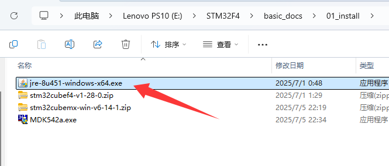
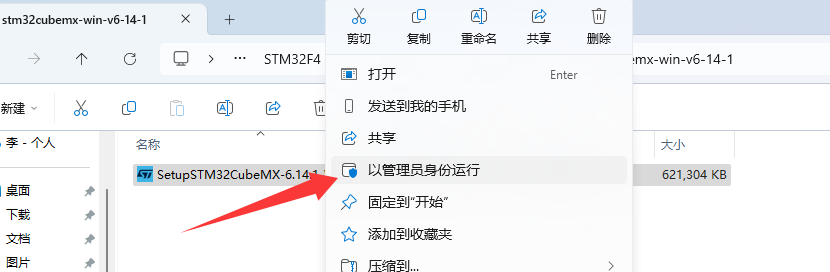
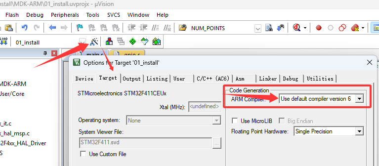
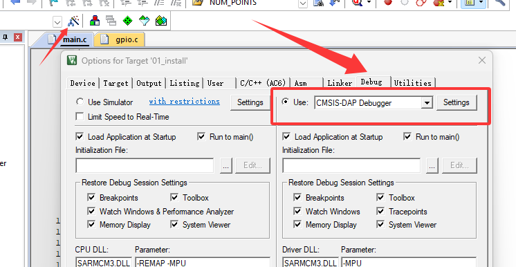
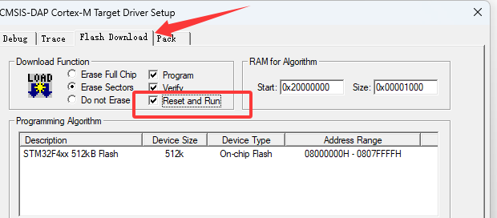
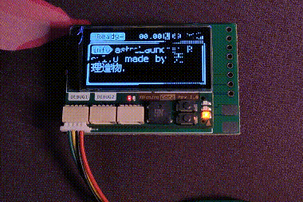

环境搭建
开发环境介绍
目前比较常用的STM32开发环境有以下几种：
标准，经典。除了 STM32 外还支持很多其他厂家的芯片。对于调试来说，也支持非常多的调试工具，并且支持单步调试查看数据变量等。
STM32CubeMX 是 ST 开发的一种图形化代码生成工具。以前单独使用 MDK5 时，基本所有代码都要手撸，很浪费时间。而自从有了 STM32CubeMX 后，开发 STM32，对片上资源的初始化更加快速便捷，只要点点点，就可以生成初始化代码并生成一个开发工程，让用户可以对项目的硬件资源软件配置不用过于关心，可以花更多的时间去处理项目产品的应用层该如何实现。
以前 ST 是没有自己的代码编辑与编译器的，现在 ST 出了自家的代码生成工具（STM32CubeMX） + 编译器（STM32CubeIDE），是免费的，终于可以让用户摆脱 MDK5 的收费版权了。但是遗憾的是只能用于STM32的开发，不支持其他芯片。并且对其他的仿真下载器的支持也不是很友好。
当然还有一些创客们比较喜欢的EIDE、Clion、PIO、arduino等等。遗憾的是，它们虽然好看，但是用在产品开发上基本很少，还是有不少缺陷的。
那么综上所述。我们这 STM32F4 整个入门手册，将以 STM32CubeMX + MDK5 进行编写和案例开发。
开发环境下载
CubeMX软件下载
官网下载地址：STM32CubeMX STM32Cube初始化代码生成器
在官网下载是需要登录并验证的，如果嫌弃麻烦也可以用我目前使用的版本 V6.14.1 ：
链接: https://pan.baidu.com/s/1wJ8tH6VHm99zbnNNAjvcMQ
提取码: LGGY
后面的内容都是基本该版本编写的，如果后面 CubeMX 有更新导致入门手册跟新版本不一样，恕不另外说明。
JAVA依赖下载
安装 STM32CubeMX是需要 JAVA 环境启动的，因此我们还需要下载安装JAVA环境包。
官网下载地址：www.java.com
在官网下载卡，如果嫌弃麻烦也可以用我目前使用的版本 Version 8 Update 451 ：
链接: https://pan.baidu.com/s/1wJ8tH6VHm99zbnNNAjvcMQ
提取码: LGGY
CubeMX芯片构建包下载
在我们使用 CubeMX 开发指定芯片时，为了让它能够快速加载对应的芯片资源，需要我们提供芯片 MCU 包。
这里我们下载的是 STM32CubeF4 MCU 包。
官网下载地址：https://www.st.com.cn/zh/embedded-software/stm32cubef4.html
该包由 STM32Cube 硬件抽象层（HAL）和底层（LL）API 组成，还包括一套一致的中间件组件（实时操作系统、USB、FAT 文件系统、图形和 TCP/IP）。另外 TouchGFX 图形软件栈也包含在 STM32CubeF4 MCU包中，作为 STM32Cube 生态系统的组成部分。它在 STM32 微控制器上供生产及分发使用时是免费提供的。
所有的嵌入式软件工具包都附带了一套完整的在 STMicroelectronics 板上运行的示例程序。如果我们要不会的地方，可以打开官网的例程参考对比。
 |
|---|
不想在官网找？如果嫌弃麻烦也可以用我目前使用的版本 stm32cubef4-v1-28-0 ：
链接: https://pan.baidu.com/s/1wJ8tH6VHm99zbnNNAjvcMQ
提取码: LGGY
keil5 MDK下载
官网下载地址：MDK-ARM Version 5.42a download
在官网下载是需要填一些信息的，如果嫌弃麻烦也可以用我目前使用的版本 V5.42a ：
链接: https://pan.baidu.com/s/1wJ8tH6VHm99zbnNNAjvcMQ
提取码: LGGY
keil-芯片包下载
KEIL-ARM的F4芯片包下载地址：STM32F4xx_DFP 3.1.0
如果嫌弃麻烦也可以用我目前使用的版本 STM32F4xx_DFP 3.1.0 ：
链接: https://pan.baidu.com/s/1wJ8tH6VHm99zbnNNAjvcMQ
提取码: LGGY
开发环境安装
JAVA环境安装
双击运行我们下载下来的 JAVA 安装包，然后一路确认即可。
|  |
|---|
 |
|---|
 |
|---|
Keil5 MDK安装
先在自己要安装的位置搞好文件夹，方便我们后期知道keil的路径在哪里。比如我是打算安装在 D:/IDE/keil_v5 文件夹下。
然后我又创建两个文件夹，分别是 ide 和 pack。
接下来双击运行我们之前下载 keil5 时的 .exe 文件。
配置安装路径时，我选择了我之前创建文件夹的位置。方便我后续找到 keil5 的位置。
设置用户信息时，随便填写即可。
安装完成时会弹出一个芯片包下载页面，在这个页面下载很卡，我通常直接通过系统任务管理器关闭，后面我们使用离线安装芯片包的方式更新。
运行我们之前下载的 keil5-F4离线芯片包。
keil通常下载安装完成后，不能编译一些大的工程。要编译大工程需要用户购买注册，而我们的注册机在 win11系统下被当成病毒无法下载运行，所以使用测试机时，我们需要关闭电脑的病毒查杀。
解压运行keil破解工具2035，并且填入我们刚才复制的 CID 到注册机上，生成我们的 keil 许可证。
将刚才生成的许可证，复制粘贴到我们 keil 许可证管理下，确认我们的 keil 被注册到 2032 年。
 |
|---|
CubeMX安装
解压我们之前下载的 stm32cubemx-win-v6-14-1.zip ，然后在解压的文件夹中以管理员身份运行 .exe 文件。
|  |
|---|
在设置安装路径时，我自行选择了一个我喜欢的位置：D:\IDE\cubemx
安装芯片包
运行我们之前安装好的 CubeMX。并找到 Help -> Manage embedded software packages，该选项是软件包管理。
我们从本地导入我们之前下载的 CubeMX芯片构建包。
如果安装完成，会显示为一个绿色的填充矩形。
新建工程
打开 CubeMX ，创建一个工程。
选择创建一个 STM32F411CEU6 的工程。
在图形化界面中，搜索 PC13 引脚进行定位。
设置 PC13 引脚为输出模式。
在左侧边栏，找到 GPIO 选项，设置 PC13 引脚的详细参数。
默认低电平、推挽输出模式、无上下拉电阻、低速IO、命名为 LED_TEST2。
在顶部导航栏，找到 Project Manager，在其默认打开页中，设置我们的工程名称、工程保存路径、使用Keil5-MDK和版本设置。
在 Project Manager 下的左侧边栏 Code Generator 选项页下，设置为每一个外设初始化都生成 .c 和 .h 文件。
开始生成我们的 STM32 工程。
工程生成完成后，打开我们的工程路径。
在新工程路径下，找到keil5 的启动文件（ .uvprojx 后缀）
设置该工程的编译器版本为 ARMACC-V6。
|  |
|---|
在 main.c 文件中的 while 中添加以下代码：
HAL_Delay(500);
HAL_GPIO_WritePin(LED_TEST2_GPIO_Port, LED_TEST2_Pin, GPIO_PIN_RESET);
HAL_Delay(500);
HAL_GPIO_WritePin(LED_TEST2_GPIO_Port, LED_TEST2_Pin, GPIO_PIN_SET);
关于代码的解析请看下一节
GPIO使用。
对我们的工程进行编译，如果没有问题则是输出 - 0 Error(s), 0 Warning(s).
下载验证
硬件连接
这里我使用的是 DAP-LINK，故在工程上配置为 CMSIS-DAP。
理论上 ST-LINK、J-LINK、DAP-LINK都可以对该项目的主控进行下载。
|  |
|---|
我的下载器实物（点击展开）


下载器与开发板的连接：
| DAP-LNK | 开发板 |
|---|---|
| GND | GND |
| 3V3 | 3V3 |
| SWDIO | SWDIO |
| SWCLK | SWCLK |

打开工程的debug设置选项，确认能够识别到下载器和芯片。
 |
|---|
设置下载完成后自动复位。
|  |
|---|
下载。
效果验证
开发板右侧最上方 F411 的 LED 灯缓慢闪烁。
|  |
|---|